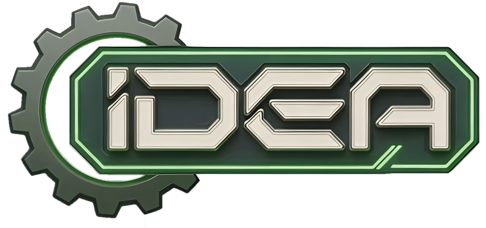

| Course | Full-year honors course on the daily technology block, completed in one semester, Aug 17 to Dec 11. UC A-G Area D (Science), UC honors designation. |
| Enrollment | Grades 10-12. IDEA114 recommended, Integrated Math II required alongside. |
Engineering I Honors is a laboratory engineering course. You will spend most of it on your feet, at a bench or a machine, with a caliper in your hand. The order of the units is deliberate: you learn to make things before anyone asks you to design them, so your design decisions stay anchored to what the equipment can hold rather than to what looks good on a screen. Every number gets justified, every result measured, and every claim defended out loud. About 65% of class time is hands-on.
| U1 | Materials and Mechanical Hardware | Identify materials by testing them. Size hardware to real loads. |
| U2 | Manufacturing Processes | Shop certification, then five fabrication stations in rotation. |
| U3 | Design for Manufacturability | Design it, make it, measure how close it came. |
| U4 | Mechanism Design and Documentation | A full mechanism built from a requirement spec. |
| U5 | Integrated Design Challenge | Four teams, four mechanisms, one working platform. |
Everything in IDEA runs through ideabosco.com. Sign in with your boscotech.net Google account. Two parts matter every day.
IDEA Classroomideabosco.com/classroomAssignments are posted, opened, worked in, and submitted here, and your work saves as you go. Due dates, returned grades, comments, and the extended syllabus live here too. FACTS remains the official gradebook. |
The Notebookideabosco.com/notebookYou keep a physical notebook and write in it while you work, then photograph each page and upload it here. Entries attach to a specific lab or testing session, which is what makes them gradeable. |
Documentation is a daily practice in this course, not something you catch up on later. Each unit's Documentation Check is worth 25 points.
| An entry exists for every lab and testing session | 7 |
| Entries hold raw data as recorded, not reconstructed afterward | 6 |
| Entries are dated and legible | 6 |
| Entries are specific enough that another student could reconstruct your work | 6 |
| Category | Weight | Points |
|---|---|---|
| Unit Labs (4 × 50) | 20% | 200 |
| Unit Assignments (4 × 100) | 25% | 400 |
| Engineering Documentation (4 × 25) | 10% | 100 |
| Integrated Design Challenge (team 150 + individual 100) | 25% | 250 |
| Final Exam | 20% | 100 |
| Semester total | 100% | 1,050 |
Rubrics are checklists, and large deliverables are staged into checkpoints so an error costs you the day it happens. The final exam is an individual written problem set, Monday December 14. Letter grades and GPA weighting follow the school's scale. Extra credit is capped at 2% of semester points, about 21 points, purchased with IDEA Coins. That is the only extra credit in this course.
Honors designation. UC adds one grade point per semester of an approved honors course, so an A counts as 5 instead of 4, capped at 8 semesters across grades 10 and 11. You may drop the honors designation and take this as a standard 4-point course: same class, same seat, same work, only the transcript changes. Talk to your counselor first.
Accommodations. If you have a documented accommodation, bring it to me in the first two weeks and it will be honored in full. Counseling can help you start that process.
Bring every day: a notebook (purpose-made engineering notebook preferred, any bound notebook works), a pen or pencil, a calculator, and a device that reaches ideabosco.com.
Required purchase: 3M 7500 Series half facepiece respirator with 3M 60926 cartridges. About $45 to $65 together, and the one item you must own to work in the shop regularly. The facepiece comes in three sizes: 7501 small, 7502 medium, 7503 large. Buy the size that fits your face. We teach you the user seal check in class before you use it, because a respirator that does not seal does not protect you. Loaners exist for the day you forget, and they are shared.
The 60926 is a multi-gas, vapor, and P100 combination cartridge, and it is the exact part number to buy. The pair is specced to one standard: a single purchase covering every operation in the IDEA shop. P100 handles metal fume from laser welding on the MetalFab plus particulate from grinding, sanding, and machining. The gas and vapor side handles formaldehyde from lasering MDF and plywood, organic vapors from adhesives and solvents, and acid gases off cut plastics. A disposable dust mask covers none of the vapor hazards.
| ideabosco.com/209h |
Recommended purchases. IDEA provides basic safety gear and required tools at all times, so nothing below is mandatory. Owning your own is recommended for fit and sanitation. Scan for the digital syllabus, including direct links to the exact respirator and cartridges above and to every item below. If cost is a problem, see me. |
I have read the IDEA209H syllabus. I understand:
Students 18 or older may sign both sections themselves.